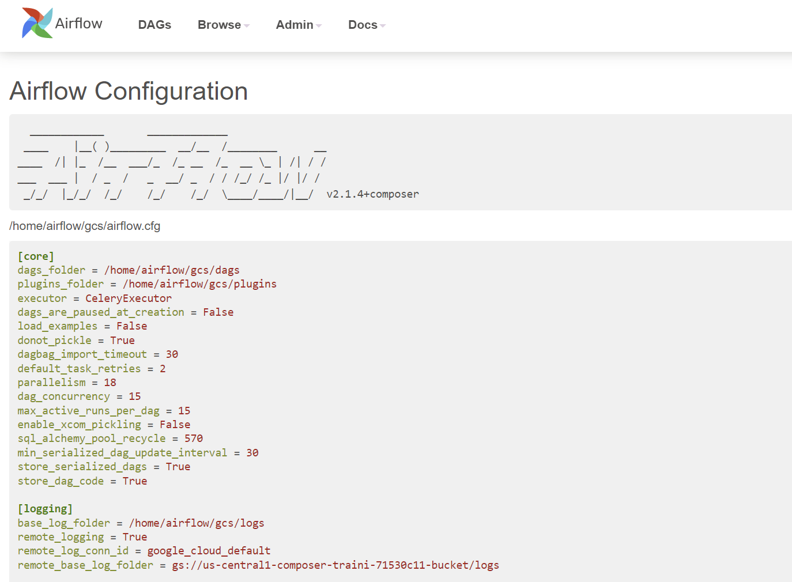
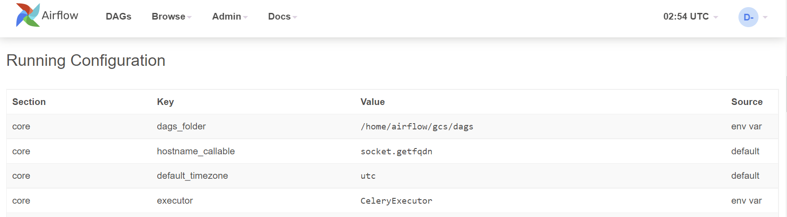
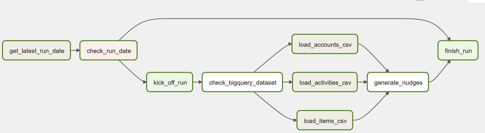

Introduction
This repository aims to provide a short course about the basics of Apache Airflow and how to run it on Google Cloud Composer on Google Cloud.
The repository uses mdBook to create a mini-book tutorial. You can find the source code of this mini-book under the code folder.
Learning Goals
Through this course, you will experience working with Airflow data pipelines on Google Cloud Composer. You will become familiar with the following topics:
- Apache Airflow and its concepts
- Understanding of Google Cloud Composer
- Setting up Airflow
- Building Airflow pipelines
Access the mini-book
This mini-book has been deployed to GitHub pages, you can access it from here.
You can also run it locally:
- Clone the repository
- Install mdBook following the guide
- Run
make serve - In your browser, navigate to
http://localhost:3000

Contribution
If you'd like to get involved, either fixing a grammar mistake or adding a new chapter, feel free to send a pull request.
Apache Airflow and its concepts
What is Airflow
Airflow is a platform to programmatically create, schedule, and monitor workflows.
You can use Airflow to create workflows as Directed Acyclic Graphs (DAGs) of tasks. The Airflow scheduler executes your tasks on various workers while following the specified dependencies. Rich command-line utilities make performing complex surgeries on DAGs a snap. The rich user interface helps to visualize pipelines running in production, monitor progress, and troubleshoot issues when needed.
Quick peek

Why Airflow is popular
- You can define workflows as Python code, so that they:
- Are more flexible
- Are testable
- Are reusable
- Can access the whole Python echo system
- Battery included platform
- Airflow provides libraries to connect
- Popular database: MySQL, Postgres, MongoDB, Oracle, SQL Server, Snowflake and BigQuery
- Services: Databricks, Datadog, ElasticSearch, Jenkins, Salesforce, SendGrid, Slack and Zendesk
- Airflow provides libraries to connect
- You can deploy Airflow to public cloud platforms: Amazon Web Services (AWS), Azure, and Google Cloud Platform (GCP)
- Informational and feature-rich UI to visualize workflows' status, monitor progress, troubleshoot issues, trigger, and re-trigger workflows and tasks in them
Beyond the Horizon
Airflow is not a data streaming solution. Workflows are expected to be mostly static or slowly changing. Below are a few example use cases of it:
Daily—Load batch files from different databases to a reporting databaseDaily/Weekly/Monthly—Generate and deliver reports to stakeholdersDaily—Re-train machine learning models with fresh dataHourly—Back up data from a databaseHourly—Generate and send recommended products to customers based on customers activities - think spam emails you get from eBayOn-demand (triggered)—Send registration emails to newly registered customers
Airflow concepts
DAG—A DAG is a collection of tasks and describe how to run a workflow written in Python. A pipeline is designed as a directed acyclic graph, in which the tasks can be executed independently. Then these tasks are combined logically as a graph.Task—A Task defines a unit of work within a DAG; it is represented as a node in the DAG graph. Each task is an implementation of an Operator, for example, a PythonOperator to execute some Python code or a BashOperator to run a Bash command. After an operator is instantiated, it's called a task.Task instance—A task instance represents a specific run of a task characterized by a DAG, a task, and a point (execution_date).Operators—Operators are atomic components in a DAG describing a single task in the pipeline. They determine what gets done in that task when a DAG runs. Airflow provides operators for common tasks. It is extendable so that you can define your own custom operators.Sensors—Sensors are special operators that repeatedly run until the predefined condition is fulfilled. For example a file sensor can wait until the file lands, then continue the workflowHooks—Provide a uniform interface to access external services like Google Cloud Storage (GCS), BigQuery, PubSub, etc. Hooks are the building blocks for Operators/Sensors to interact with external services.DAG run—when a DAG is triggered, it is called a DAG run. It represents the instance of the workflowScheduler—Airflow scheduler monitors all tasks and DAGs, then triggers the task instances once their dependencies are completeExecutor—Airflow Executors are the mechanism by which task instances get to run. The most popular Executor is Celery Executor
Google Cloud Composer
Google Cloud Composer is a fully managed workflow orchestration service built on Apache Airflow. It is the recommended way to run Airflow on Google Cloud.
In this section, we will talk about its benefits, architecture, support, and limitations.
Benefits
As a fully managed Airflow service, Cloud Composer has the below benefits:
- Fully managed workflow orchestration
- Cloud Composer's managed nature and Apache Airflow compatibility allow you to focus on authoring, scheduling and monitoring your workflows as opposed to provisioning resources
- Integrates with other Google Cloud products
- End-to-end integration with Google Cloud products, including BigQuery, Dataflow, Dataproc, Datastore, Cloud Storage, Pub/Sub, and AI Platform, gives users the freedom to fully orchestrate their pipelines
- Supports hybrid and multi-cloud
- Author, schedule, and monitor your workflows through a single orchestration tool—whether your pipeline lives on-premises, in multiple clouds, or entirely within Google Cloud
Cloud Composer Architecture
In this section, we will talk about the architecture of Cloud Composer.
Composer components
A Cloud Composer environment contains multiple components, below are some of the important ones:
- Airflow Webserver
- It is a visual management interface powered by Flask-AppBuilder
- It provides the ability to
- View status of DAGs and their status
- Display logs from each DAG and worker
- Act on the DAG status (pause, unpause, trigger)
- Configure Airflow, such as variables, connections, etc
- Each view the code of DAGs
- Airflow scheduler
- It monitors all tasks and DAGs, then triggers the task instances once their dependencies are complete
- Behind the scenes, the scheduler spins up a subprocess, which monitors and stays in sync with all DAGs in the specified DAG directory. Once per minute, by default, the scheduler collects DAG parsing results and checks whether any active task can be triggered
- Airflow worker
- It executes individual tasks from DAGs by taking them from the Redis queue.
- Airflow database hosted on CloudSQL
- It stores all the information of Airflow, including DAGs, task information, configs, etc
- Airflow buckets
- When you create an environment, Cloud Composer creates a Cloud Storage bucket and associates the bucket with your Composer environment.
- You can store custom code in the Cloud Storage bucket, including DAGs, plugins, and other resources.
- Behind the scene, Composer uses gcsfuse to sync all the content to Airflow workers and webserver.
- You can find a Google document that shows the mapping list between the folders in the bucket to Airflow folders.
- Redis queue
- It holds a queue of individual tasks from your DAGs. Airflow schedulers fill the queue; Airflow workers take their tasks from it
Customer and tenant projects
Cloud Composer runs on both customer and tenant (Google-managed) projects; Composer distributes the environment's resources between a tenant and a customer project. The resources are deployed to different projects because of varying environment setups.
However, regardless of which environment setup and Composer versions you choose, there is:
- A Google Kubernetes Engine (GKE) cluster in the customer project that runs the Airflow workloads
- A CloudSQL instance on the tenant project, and
- A Cloud Storage bucket to store DAGs and plugins
Different Composer setups
Below are the different setups of Composer 1 and 2
Composer 1


If the Domain Restricted Sharing (DRS) organizational policy is turned on in the project, then Cloud Composer uses the Private IP with DRS environment architecture.

Composer 2


Comparison of Composer 1 and 2
Composer 2 is the future version of Composer. Most of the users are still using Composer 1 because Composer 1 is still the default. We can expect Composer 1 to be retired soon, and Composer 2 will be the only supported one. From the above architecture diagrams, there are a few things that are some differences between these two versions:
- The significant improvement of Composer 2 is autoscaling; it leverages GKE Autopilot feature, meaning the Composer environment can be automatically scaled up to handle more workloads and scale down to reduce cost.
- Composer 2 only supports Airflow 2 and Python 3.8+. Suppose there is a requirement of using Python 2(please consider upgrade to Python 3) and Airflow 1.10.*, Composer 1 is the only option.
- In Composer 2, the Airflow Webserver is moved to GKE from App Engine running on the tenant project.
You can find more details of the differences between the two Composer versions from here.
Version support and deprecation
Versions
There are two versions of Cloud Composer, Composer 1 and 2. You can find the full list of Composer versions here.
A typical version looks like this:
composer-1.17.5-airflow-2.1.4
In the version identifier, 1.17.5 is the version of Composer, while 2.1.4 is the version of Airflow.
You can consider each Composer version contains all the close-sourced Google deployments and hosting code and each Airflow version contains the open-sourced code from Apache Airflow code that is hosted on GitHub repository.
Understanding Composer and Airflow versions
While there are two versions of Cloud Composer and two versions of Apache Airflow, each version of Composer does not directly map to a version of Airflow.
Composer v1 has support for both Airflow v1 and v2, while Composer v2 only supports Airflow v2.
As mentioned in Section 3.2, the primary difference between Composer 1 and 2 is the involvement of GKE Autopilot. Composer 2 takes advantage of GKE Autopilot for autoscaling. Composer 1, by contrast, does not support autoscaling.
The differences of Airflow 1 and 2 are more about additional/improved functionality detailed at length here. The most anticipated new features in Airflow 2 include: Easier to author DAGs, massive scheduler performance improvements, high-availability support for the job scheduler, and an improved UI.
Support and deprecation
Composer
Cloud Composer version support is defined as follows:
- 0-12 months from the release date: Cloud Composer environments running these versions are fully supported.
- 12-18 months from the release date: Cloud Composer environments running these versions are unsupported except to notify customers about security issues.
- 18+ months from the release date: Cloud Composer environments running these versions are unsupported and entirely user-managed.
Airflow
A particular version of Apache Airflow found in Cloud Composer is not always an exact match of the corresponding version in upstream Airflow because Cloud Composer uses a patched version of Airflow. This repository contains the code for every patched version of Airflow used in Composer, and it is useful for:
- Finding out if a specific commit from the Airflow open-source project is in the Composer version
- Reproducing issues locally
- Check how an Operator/Sensor/Hook looks like in the Composer version
When deep-dive troubleshooting an Airflow issue from Cloud Composer, you may want to look into Google's official composer-airflow repository.
Limitations
Limited access to underline systems
Being a hosted service, Google manages all the infrastructure. As a customer, you don't have access to the underline systems and the database. Most of the time, it is excellent and worry-free.
However, it can be a pain when you bump into any issue that requires more deep investigations.
Painful upgrade process
Each Composer version has one year of Google support. After that, it is recommended to upgrade to a newer supported version. To upgrade the Composer version, Google provides a beta feature. However, it only works if the old Composer version is not that old. Some Cloud Composer users are using out-of-support versions - some environments are more than two years old. The managed upgrading process that Google provides would most likely fail.
In this scenario, it is recommended that the customer creates a new Composer environment and migrate all the existing workflows to it.
Build Airflow pipelines on Composer
In this chapter, we will deploy a Cloud Composer environment, explore the Airflow UI, and write a few DAGs. Towards the end, we will follow a case study, analyzing the business requirements that will inform creation of an example Airflow pipeline.
Deploy a Composer environment
Cloud Composer can be deployed via Console, gcloud cli, API, and Terraform. You can find the detailed instructions from Google's document.
In this tutorial, we will create a public IP Composer 1 (Composer 2 only recently became Generally Available) using an Airflow 2 environment with gcloud.
The bash script below can be found at: code/deploy-composer.sh
#! /bin/bash
# Variables to set
PROJECT_ID=$(gcloud config get-value project)
#echo "Setting default GCP project to ${PROJECT_ID}"
#gcloud config set project ${PROJECT_ID}
COMPOSER_SERVICE_ACCOUNT_NAME="composer-training"
echo "Creating a service account for Composer environment to use"
gcloud iam service-accounts create "${COMPOSER_SERVICE_ACCOUNT_NAME}" \
--description="composer training service account" \
--display-name="composer training service account"
COMPOSER_SERVICE_ACCOUNT_ID="${COMPOSER_SERVICE_ACCOUNT_NAME}@${PROJECT_ID}.iam.gserviceaccount.com"
echo "Created service account: ${COMPOSER_SERVICE_ACCOUNT_ID}"
# https://cloud.google.com/composer/docs/how-to/access-control#service-account
echo "Adding composer.worker roles to the service account"
gcloud projects add-iam-policy-binding "${PROJECT_ID}" \
--member="serviceAccount:${COMPOSER_SERVICE_ACCOUNT_ID}" \
--role="roles/composer.worker"
echo "Adding GCS and BigQuery admin roles for the service account to run this tutorial"
gcloud projects add-iam-policy-binding "${PROJECT_ID}" \
--member="serviceAccount:${COMPOSER_SERVICE_ACCOUNT_ID}" \
--role="roles/storage.admin"
gcloud projects add-iam-policy-binding "${PROJECT_ID}" \
--member="serviceAccount:${COMPOSER_SERVICE_ACCOUNT_ID}" \
--role="roles/bigquery.admin"
echo "Enabling Composer API, this will take a few minutes..."
gcloud services enable composer.googleapis.com
echo "Creating Cloud Composer, this will take ~25 minutes..."
gcloud composer environments create composer-training \
--location us-central1 \
--node-count 3 \
--scheduler-count 1 \
--disk-size 100 \
--machine-type n1-standard-1 \
--cloud-sql-machine-type db-n1-standard-2 \
--web-server-machine-type composer-n1-webserver-2 \
--image-version "composer-1.17.5-airflow-2.1.4" \
--service-account "${COMPOSER_SERVICE_ACCOUNT_ID}" \
--zone us-central1-c
After running the deployment scripts, verify:
-
From Identity and Access Management (IAM) UI, a service account named
composer-training@${PROJECT_ID}.iam.gserviceaccount.comhas been created, and it has Cloud Storage and BigQuery Admin roles.
-
From Composer UI that a Composer environment named
composer-traininghas been created.
Lastly, click on the Airflow webserver to open the Airflow UI. Note that the Composer 1 environment we deployed uses Airflow 2 - the UI might look slightly different if you deployed an Airflow 1 version on Composer 1.

A tour of the Airflow UI
The Airflow UI allows you to monitor and troubleshoot your data pipelines. It can also be helpful to manage Airflow cluster, and you can view and set up Airflow's:
- Variables
- Configurations
- Connections
- Plugins
- Pools
- XComs
DAGs view
The default page of Airflow UI is the DAGs view. It lists all the DAGs that are available on this Airflow instance. You can see exactly how many tasks succeeded, failed, or are still running.

From here, you can manually trigger the DAGs by clicking the Play button. This can be beneficial if you have a scheduled DAG that failed and would like to re-run it:

Note that there is also an option to pass parameters (a JSON blob) when triggering dags. This enabled flexibility when running a DAG:

Individual DAG views
After a short tour of the overall DAG view, let's look at some individual DAG views.
There are three kinds of individual DAG views: Tree view, Graph view, and Calendar view.
Tree view
After clicking the DAG name, the tree view is the default view.
A tree representation of the DAG that spans across time. You can tell each task's status in different colors.

Graph view
The graph view is my favorite view when I troubleshoot the issue with Airflow UI. It visualizes your DAG's dependencies and their current status for a specific run.

After clicking the task, A pop-up shows, you can conduct a few actions from the pop-up dialog for this specific task instance.

One of the most valuable buttons here is Log because it shows you the stack trace.
When a DAG fails, you typically begin the troubleshooting process by:
- Opening the Airflow UI
- Clicking the failed DAG
- Going to
Graph view - Clicking the failed task (marked in
red) - On the task instance pop-up dialog, click
Logto check the logs. The stacktrace is here:

If the error is caused by some solvable issue (for example, the input file didn't arrive), after fixing the issue, go back to the task instance pop-up dialog and click the Clear button. This will clear the status of the current task instance and it will be re-run. If there are following tasks after it, they will be re-run as well.
Calendar view
The calendar view gives you an overview of your entire DAG's history over months, or even years. Letting you quickly see trends of the overall success/failure rate of runs overtime.
It can be pretty handy to get an idea of how stable the DAG is. For example, if your DAG is waiting for files to land on a Cloud Storage bucket, this can tell you if they have been late in the past X days:

Admin pages
Variable view
The variable view allows you to list, create, edit or delete the key-value pairs used in Airflow pipelines.
Value of a variable will be hidden if the key contains any words in (password, secret, passwd, authorization, api_key, apikey, access_token) by default, but can be configured to show in plain-text.
It is generally not recommended to store sensitive data like passwords and API keys within Airflow variables. On Google Cloud, Cloud Composer has native integration with Google Cloud Secret Manager; you can find a detailed guide on how to use it here.
Airflow variables can be helpful to store insensitive environment variables. For example, database connection strings, API endpoints, GCS bucket names or paths, etc.

Configuration view
The Configuration view page displays all the Airflow configurations, including the ones in airflow.cfg and Running Configuration.


Note that default configurations in airflow.cfg are overwritten by the environment variables. As per Google document, these environment variables can be set from cloud console, gcloud cli, API, and Terraform.
Connection view
In the context of Airflow, a connection stores information such as hostname, port, login, and passwords to other systems and services. The pipeline code you will author will reference the conn_id of the Connection objects.
On the connection view page, connections information is shown and can be edited:

In the last chapter, we deployed a Cloud Composer environment with a service account. In the Airflow pipelines in Composer, by default, they will use this service account to authorize all the Google Cloud API calls. This saves time setting up Google Cloud connection on the Airflow configuration view page.
XComs view
XComs (short for cross-communications) is a mechanism that let tasks talk to each other, as by default, Tasks are entirely isolated and may be running on completely different machines.
XComs view page shows all the values that are stored as XComs. It can be helpful when troubleshooting failed DAGs that use XComs to pass the values from one task to another:

Summary
Airflow UI can be pretty valuable for:
- Data engineers to troubleshoot DAG failures
- Managers to quickly get an idea about scheduled workloads
- Administrators to set up Variables and Connections. However, these are better done via deployment scripts via gcloud cli, API, or Terraform
That's all for the UI bit, time to write and run some DAGs.
Write the DAGs
In this chapter, we will learn how to write the DAGs. We will use some of the fundamental Airflow concepts we learned to create these pipelines.
Basics of writing a DAG
Airflow uses Python to define DAGs. A DAG file is nothing but a standard Python file.
To define a DAG, typically, there are five steps:
- Import Python modules
- Define default args
- These args will get passed on to each Operator/Sensor
- Args can be overridden on a per-task basis during Operator/Sensor initialization
- Instantiate DAG / Create a DAG object
- Define tasks
- A task can be an instance of an Operator or a Sensor
- Define task sequence and dependencies
Let's continue and write our first DAG.
First DAG
Let's start with a basic DAG with two tasks: start and finish.
Let's assume this DAG runs at 03:00 daily. Both of the tasks in the DAG use BashOperator to run a single command.
By following the five steps from the previous page, the DAG definition looks like the below:
Create a file named 1_first_dag.py that contains the following code:
# Step-1: Import Python modules
from datetime import datetime, timedelta
from airflow import DAG
from airflow.operators.bash_operator import BashOperator
# Step-2: Define default args
default_args = {
"owner": "airflow",
"depends_on_past": False,
"retries": 1,
"retry_delay": timedelta(minutes=5),
"email": ["airflow@example.com"],
"email_on_failure": False,
"email_on_retry": False,
}
# Step-3: Instantiate DAG --- or creating a DAG object
dag = DAG(
"1_first_dag",
description="first dag",
schedule_interval="0 3 * * *",
start_date=datetime(2022, 2, 17),
catchup=False,
tags=["custom"],
)
# Step-4: Define Tasks
start = BashOperator(
task_id="start",
bash_command='echo "start"',
dag=dag,
)
check_ip = BashOperator(
task_id="check_ip",
bash_command="curl checkip.amazonaws.com",
dag=dag,
)
end = BashOperator(
task_id="end",
bash_command='echo "stop"',
dag=dag,
)
# Step-5. Define task sequence and dependencies
start >> check_ip >> end

Note that we created a DAG object in this DAG, then associated it with every task in the pipeline. The DAG code can be verbose if you have many tasks in the pipeline.
To simplify it, Airflow provides another to define the DAG using context managers. Let's see how it works.
Context manager DAG
DAGs can be used as context managers to assign each Operator/Sensor to that DAG automatically. This can be helpful if you have lots of tasks in a DAG; you don't need to repeat dag=dag in each Operator/Sensor. From the latest Airflow document, using context managers is recommended.
Below is a modified version of our first DAG in the previous page.
Create a file named 2_context_manager_dag.py that contains the following code:
from datetime import datetime, timedelta
from airflow import DAG
from airflow.operators.bash_operator import BashOperator
default_args = {
"owner": "airflow",
"depends_on_past": False,
"retries": 1,
"retry_delay": timedelta(minutes=5),
"email": ["airflow@example.com"],
"email_on_failure": False,
"email_on_retry": False,
}
with DAG(
"2_context_manager_dag",
default_args=default_args,
description="context manager Dag",
schedule_interval="0 12 * * *",
start_date=datetime(2021, 12, 1),
catchup=False,
tags=["custom"],
) as dag:
start = BashOperator(
task_id="start",
bash_command="echo start",
)
end = BashOperator(
task_id="end",
bash_command="echo stop",
)
start >> end
So far, in the two DAGs that we wrote, the tasks run one by one. It is excellent but may not be the most efficient. What if we have a pipeline, and there are some tasks that can be running in parallel?
Parallel tasks DAG
Let's assume that there are four tasks, T1, T2, T3, and T4, each one of them will take 10 seconds to run. Task T1, T2, T3 don't depend on others, while T4 depends on the success of T1, T2, and T3.
In an orchestration system that does not support parallel tasks, these tasks run sequentially one after another. It should take around 40 seconds to finish.

However, by design, Airflow supports concurrency, meaning that the tasks that don't depend on others can run in parallel.
The above DAG can be updated, and it should take ~20 seconds to finish.
The code of the DAG looks like this:
Create a file named 3_parallel_tasks_dag.py that contains the following code:
from datetime import datetime, timedelta
from airflow import DAG
from airflow.operators.bash_operator import BashOperator
default_args = {
"owner": "airflow",
"depends_on_past": False,
"retries": 1,
"retry_delay": timedelta(minutes=5),
"email": ["airflow@example.com"],
"email_on_failure": False,
"email_on_retry": False,
}
with DAG(
"3_parallel_tasks_dag",
default_args=default_args,
description="parallel tasks Dag",
schedule_interval="0 12 * * *",
start_date=datetime(2021, 12, 1),
catchup=False,
tags=["custom"],
) as dag:
t1 = BashOperator(
task_id="T1",
bash_command="echo T1",
)
t2 = BashOperator(
task_id="T2",
bash_command="echo T2",
)
t3 = BashOperator(
task_id="T3",
bash_command="echo T3",
)
t4 = BashOperator(
task_id="T4",
bash_command="echo T4",
)
# t1 >> t2 >> t3 >> t4
[t1, t2, t3] >> t4
Dynamic tasks DAG
As mentioned before, in Airflow, a DAG is defined by Python code. There is no need for it to be purely declarative; you are free to use loops, functions, and more to define your DAG.
For example, let's say that there is a requirement to create a data pipeline to export data from tables in a database. Since new tables can be added at any time, the number of tables that we need to export data from is dynamic.
Firstly, we save and upload a few SQL queries in the Cloud Storage bucket.

Then, we can create a DAG that uses a for loop to define some tasks. In this example, DummyOperator is used for demonstration purpose. As per name, DummyOperator does nothing. The tasks that use it are evaluated by the scheduler but never processed by the executor.
Create a file named 4_dynamic_dag.py that contains the following code:
from datetime import datetime
from airflow import DAG
from airflow.operators.dummy_operator import DummyOperator
import os
sql_folder = os.path.abspath(os.path.join(os.path.dirname(__file__), "sql"))
sql_file_names = []
for file in os.listdir(sql_folder):
if file.endswith(".sql"):
sql_file_names.append(file)
with DAG(
"4_dynamic_dag",
description="my dynamic DAG",
schedule_interval="0 12 * * *",
template_searchpath=sql_folder,
start_date=datetime(2021, 12, 1),
catchup=False,
tags=["custom"],
) as dag:
d1 = DummyOperator(task_id="kick_off_dag")
d3 = DummyOperator(task_id="finish_dag")
for i in sql_file_names:
d2 = DummyOperator(task_id=f"export_data_for_{i}")
d1 >> d2 >> d3

Dynamic DAGs are useful. However, try and keep the topology (the layout) of the DAG tasks relatively stable; dynamic DAGs are usually better used for dynamically loading configuration options or changing operator options.
Remember that readability is also important in designing Airflow DAGs.
Next, let's create a DAG to handle branching tasks.
Branching DAG
When designing data pipelines, there may be use cases that require more complex task flows than Task A > Task B > Task C. For example, let's say that there is a use case where different tasks need to be chosen to execute based on the results of an upstream task. We call this branching in Airflow, and it uses a particular Operator BranchPythonOperator to handle this use case.
The BranchPythonOperator takes a Python function as an input. The function must return a list of task IDs for the DAG to process using the function.
To give you an example of branching, let's create a DAG that uses Python random.choice function to decide which type of no-op transform it will execute.
Create a file named 5_branching_dag.py that contains the following code:
from datetime import datetime
import time
from airflow.models import DAG
from airflow.operators.dummy import DummyOperator
from airflow.operators.python import BranchPythonOperator
with DAG(
dag_id="5_braching_dag",
start_date=datetime(2021, 12, 1),
catchup=False,
schedule_interval="@daily",
tags=["custom"],
) as dag:
get_source = DummyOperator(task_id="get_source")
def branch_func():
if int(time.time()) % 2 == 0:
return "even_number_transform"
else:
return "odd_number_transform"
branch_check = BranchPythonOperator(
task_id="branch_check", python_callable=branch_func
)
even_number_transform = DummyOperator(task_id="even_number_transform")
odd_number_transform = DummyOperator(task_id="odd_number_transform")
get_source >> branch_check >> [even_number_transform, odd_number_transform]

From the historical runs, we can see that different transform tasks were run.

Xcoms DAG
Sharing data between Tasks is a common use case in Airflow. For example, a Task calls an API to get the data filenames for today's data ingestion DAG. The following Tasks need to know these filenames to load the data.
XCom (short for cross-communication) is a native feature within Airflow. XComs allow tasks to exchange Task metadata or small amounts of data. XComs can be "pushed" (sent) or "pulled" (retrieved). When a task pushes an XCom, it makes it generally available to other tasks.
There are two ways to push a value to XCom.
- Use
xcom_pull - Return the value in your function, and it will be pushed to Xcom automatically.
When a Task (An instance of an Operator) is running, it will get a copy of the Task Instance passed to it. When python_callable is used inside a PythonOperator Task, you can get the task instance object via ti = kwargs['ti']. After that, we can call the xcom_pull function to retrieve the Xcom value.
Let's create a DAG to exchange value between tasks.
Create a file named 6_xcoms_dag.py that contains the following code:
from datetime import datetime
from airflow.models import DAG
from airflow.operators.python_operator import PythonOperator
DAG = DAG(
dag_id="6_xcoms_dag",
start_date=datetime.now(),
catchup=False,
schedule_interval="@once",
tags=["custom"],
)
def push_function(**kwargs):
ls = ["a", "b", "c"]
return ls
push_task = PythonOperator(
task_id="push_task", python_callable=push_function, provide_context=True, dag=DAG
)
def pull_function(**kwargs):
ti = kwargs["ti"]
ls = ti.xcom_pull(task_ids="push_task")
print(ls)
pull_task = PythonOperator(
task_id="pull_task", python_callable=pull_function, provide_context=True, dag=DAG
)
push_task >> pull_task
From Airflow UI, there is a tab next to Log called XCom that shows XCom values.

Let's check the pull_task. Yes, the value was retrieved.

XCom values are stored in Airflow database and are shown on UI or logs. It is important not to store sensitive information and large data in them.
PythonOperator and TaskFlow Dag
Tasks that use PythonOperator execute Python callables/functions. You can pass parameters to the function via the op_kwargs parameter.
Airflow 2.0 adds a new style of authoring dags called the TaskFlow API which removes a lot of the boilerplate around creating PythonOperator, managing dependencies between task and accessing XCom values.
Let's create a DAG that uses both PythonOperator and TaskFlow API to show how to create tasks using Python functions.
In the below DAG, the first task uses PythonOperator to print the task context, including the parameter (my_keyword) that is passed in. The second task and third tasks are created using TaskFlow decorator. These tasks run Python functions without using PythonOperator.
Create a file named 7_python_operator_and_taskflow_dag.py that contains the following code:
import time
from datetime import datetime
from pprint import pprint
from airflow import DAG
from airflow.decorators import task
from airflow.operators.python import PythonOperator
with DAG(
dag_id="7_python_operator_and_taskflow_dag",
schedule_interval=None,
start_date=datetime(2021, 12, 1),
catchup=False,
tags=["custom"],
) as dag:
# 1. print context using PythonOperator
def print_context(ds, **kwargs):
"""Print the Airflow context and ds variable from the context."""
pprint(kwargs)
print(kwargs["my_keyword"])
print(ds)
return "Whatever you return gets printed in the logs"
print_the_context = PythonOperator(
task_id="print_the_context",
python_callable=print_context,
op_kwargs={"my_keyword": "Airflow"},
)
# 2. sleep task using TaskFlow decorator
@task(task_id="sleep_for_5")
def my_sleeping_function():
"""This is a function that will run within the DAG execution"""
time.sleep(5)
sleeping_task = my_sleeping_function()
# 3. print context again using TaskFlow decorator
@task(task_id="print_the_context_again")
def print_context_again(ds=None, **kwargs):
"""Print the Airflow context and ds variable from the context."""
pprint(kwargs)
print(kwargs["my_keyword"])
print(ds)
return "Whatever you return gets printed in the logs"
print_the_context_again = print_context_again(my_keyword="Airflow")
print_the_context >> sleeping_task >> print_the_context_again
Custom operator DAG
One thing that makes Airflow so popular is its built-in modules. There are built-in modules connecting to three major public cloud providers, as well as popular services and tools. When writing Airflow pipelines, it is always recommended to use built-in modules whenever they are available.
However, there are occasions when built-in modules cannot fulfill the requirements. Fortunately, Airflow has a plugin manager built-in that can integrate external features to its core by dropping files in your $AIRFLOW_HOME/plugins folder.
In this chapter, we will create a basic DAG that uses a custom Operator.
Firstly, let's create a HelloOperator. It inherits the BaseOperator and overrides the execute method. It also takes a parameter called operator_param.
Create a file named hello_operator.py that contains the following code:
from airflow.models import BaseOperator
from airflow.utils.decorators import apply_defaults
class HelloOperator(BaseOperator):
@apply_defaults
def __init__(self, operator_param, *args, **kwargs):
self.operator_param = operator_param
super(HelloOperator, self).__init__(*args, **kwargs)
def execute(self, context):
greeting = f"Hello, {self.operator_param}!"
self.log.info(greeting)
return greeting
Then we can create a DAG that uses the custom operator HelloOperator.
Create a file named 8_custom_operator_dag.py that contains the following code:
from datetime import datetime
from airflow import DAG
from airflow.operators.dummy_operator import DummyOperator
from operators.hello_operator import HelloOperator
dag = DAG(
"8_custom_operator_dag",
schedule_interval="0 12 * * *",
start_date=datetime(2021, 12, 1),
catchup=False,
tags=["custom"],
)
start = DummyOperator(
task_id="start",
dag=dag,
)
hello = HelloOperator(
task_id="hello",
operator_param="composer tutorial",
dag=dag,
)
end = DummyOperator(
task_id="end",
dag=dag,
)
start >> hello >> end
To run this DAG in Cloud Composer, the custom Operator file needs to be uploaded to the $AIRFLOW_HOME/plugins folder. In the context of Cloud Composer, it is the plugins folder under the Cloud Storage bucket.

Finally, we can run the DAG. From the log, we can see that it successfully logs the information.

Case study: generate nudges
From the previous chapters, we have learned the Airflow concepts and how to write DAGs and custom Operators. In this chapter, let's work on a real-world use case and create an Airflow pipeline together.
Background
An e-commerce company (let's call it Cell-mate) is a famous online shop selling phones and accessories. They have various data sources which export data in CSV files to a Google Cloud Storage (GCS) bucket on a daily basis.
Data sources
The Cell-mate has three primary data sources:
- Accounts—It contains all the information from the accounts of their customers.
- Items—It contains all the items that are listed on the website.
- Activities—It contains all the viewer activities from the customers.
Goal
The product team in Cell-mate would like to build a pipeline to generate nudge emails for the customers who recently viewed the items on their website but didn't make the purchase. As the first step, they would like the nudge data to be stored in a place so that the email campaign service can use it.
Let's continue and create the DAG first.
Create nudges DAG
When designing a DAG, we often start with critical tasks such as loading the data, transformation, exporting the data, etc. Then iteratively, we add other tasks such as checking if the BigQuery Dataset exists or not, if today's load has happened, etc.
Key tasks
To generate the nudges for the customers, we can load the daily exported CSV files to three tables in BigQuery. After that, we can run a SQL query that joins the three tables, create the nudge information, and store the results in another table. The DAG looks like this:

As the CSV files are on Google Cloud Storage (GCS) and we need to load them to BigQuery, we need an Operator that can do GCS to BigQuery. GCS to BigQuery is a pretty generic job, let's search in Astronomer Registry to see if Airflow has it in the built-in libraries:

Yes, we found the GCSToBigQueryOperator. Following it's documentation, let's create our three data load tasks:
Create a file named 9_generate_nudges_dag.py that contains the following code:
load_accounts_csv = GCSToBigQueryOperator(
task_id="load_accounts_csv",
bucket=STORE_RAW_DATA_BUCKET,
source_objects=[f"accounts_{CURRENT_DATE}.csv"],
destination_project_dataset_table=f"{DATASET_ID}.accounts",
schema_fields=[
{"name": "account_id", "type": "INTEGER", "mode": "NULLABLE"},
{"name": "account_name", "type": "STRING", "mode": "NULLABLE"},
{"name": "email", "type": "STRING", "mode": "NULLABLE"},
],
write_disposition="WRITE_TRUNCATE",
)
load_activities_csv = GCSToBigQueryOperator(
task_id="load_activities_csv",
bucket=STORE_RAW_DATA_BUCKET,
source_objects=[f"activities_{CURRENT_DATE}.csv"],
destination_project_dataset_table=f"{DATASET_ID}.activities",
schema_fields=[
{"name": "account_id", "type": "INTEGER", "mode": "NULLABLE"},
{"name": "item_id", "type": "INTEGER", "mode": "NULLABLE"},
{"name": "visit_time", "type": "TIMESTAMP", "mode": "NULLABLE"},
],
write_disposition="WRITE_TRUNCATE",
)
load_items_csv = GCSToBigQueryOperator(
task_id="load_items_csv",
bucket=STORE_RAW_DATA_BUCKET,
source_objects=[f"items_{CURRENT_DATE}.csv"],
destination_project_dataset_table=f"{DATASET_ID}.items",
schema_fields=[
{"name": "item_id", "type": "INTEGER", "mode": "NULLABLE"},
{"name": "item_name", "type": "STRING", "mode": "NULLABLE"},
{"name": "price", "type": "FLOAT", "mode": "NULLABLE"},
],
write_disposition="WRITE_TRUNCATE",
)
generate_nudges = GenerateNudgesOperator(
task_id="generate_nudges",
nudges_query=NUDGES_QUERY,
destination_dataset_table="analytics.nudges",
)
The generate_nudges task runs a BigQuery query and saves the results in a BigQuery table. It may look like an ordinary job. But unfortunately, there isn't an existing Operator that does the job. We need to create a custom Operator. In this custom Operator, we can use the built-in BigQueryHook to interact with BigQuery. We can find its source code on GitHub.
Let's call the custom Operator GenerateNudgesOperator
Create a file named generate_nudges_operator.py that contains the following code:
from airflow.models import BaseOperator
from airflow.providers.google.cloud.hooks.bigquery import BigQueryHook
from airflow.utils.decorators import apply_defaults
class GenerateNudgesOperator(BaseOperator):
@apply_defaults
def __init__(
self,
*,
nudges_query: str,
destination_dataset_table: str,
gcp_conn_id: str = "google_cloud_default",
**kwargs,
) -> None:
super().__init__(**kwargs)
self.gcp_conn_id = gcp_conn_id
self.nudges_query = nudges_query
self.destination_dataset_table = destination_dataset_table
def execute(self, context):
self.log.info(
f"Generating nudges with query {self.nudges_query} and write into {self.destination_dataset_table}..."
)
hook = BigQueryHook(gcp_conn_id=self.gcp_conn_id, use_legacy_sql=False)
hook.run_query(
sql=self.nudges_query,
destination_dataset_table=self.destination_dataset_table,
write_disposition="WRITE_TRUNCATE",
)
And the task looks like this:
generate_nudges = GenerateNudgesOperator(
task_id="generate_nudges",
nudges_query=NUDGES_QUERY,
destination_dataset_table="analytics.nudges",
)
Add other tasks
Check BigQuery Dataset
As a safety measure, we should add a task to check if the BigQuery Dataset exists before loading the CSV files.
After checking the Airflow built-in Operators, there isn't a built-in one. Let's create another custom Operator called CheckBigQueryDatasetOperator. Because it needs to access BigQuery, we can use the BigQueryHook again.
Create a file named check_bigquery_dataset_operator.py that contains the following code:
from airflow.models import BaseOperator
from airflow.providers.google.cloud.hooks.bigquery import BigQueryHook
from airflow.utils.decorators import apply_defaults
class CheckBigQueryDatasetOperator(BaseOperator):
@apply_defaults
def __init__(
self,
*,
dataset_id,
gcp_conn_id="google_cloud_default",
**kwargs,
) -> None:
super().__init__(**kwargs)
self.gcp_conn_id = gcp_conn_id
self.dataset_id = dataset_id
def execute(self, context):
self.log.info(f"Checking dataset {self.dataset_id}...")
hook = BigQueryHook(
gcp_conn_id=self.gcp_conn_id,
)
# Check dataset exists
datasets_list = hook.get_datasets_list()
self.log.info(f"datasets_list: {datasets_list}")
is_dataset_existed = False
if datasets_list:
datasets_id_list = [dataset.dataset_id for dataset in datasets_list]
is_dataset_existed = self.dataset_id in datasets_id_list
if is_dataset_existed:
return True
else:
raise Exception(f"Dataset id {self.dataset_id} not found")
And the task looks like this:
check_bigquery_dataset = CheckBigQueryDatasetOperator(
task_id="check_bigquery_dataset",
dataset_id=DATASET_ID,
)
Now the DAG looks like this:

Avoid duplicated runs
It is always a good idea to check if today's run finishes. There are multiple ways to do that. If there are numerous data pipelines, you should build an API to record their runs. When a pipeline is kicked off, it checks if the run for that day has been finished by calling the API. If yes, this particular DAG run should not continue with the following tasks.
In our case study, as we only have one data pipeline, we can assume that:
- The email system sends the emails out every day
- The data pipeline uploads a file to GCS (using the current date as the filename)
With this assumption, a few tasks can be added to finalize the DAG.

Let's dig into the new tasks.
Get latest run date
As mentioned above, we can check if a file named as current date exists in the GCS bucket. To do this, we can use the GCSListObjectsOperator from Airflow built-in libraries. The task looks like this:
get_latest_run_date = GCSListObjectsOperator(
task_id="get_latest_run_date",
bucket=NUDGES_HISTORY_BUCKET,
prefix=CURRENT_DATE,
)
From the code on Github, it returns the URI of the file on GCS or empty array(if the file does not exist). In Airflow Operator, any value that is returned by execute function is stored in xcom.
Now we have a value in xcom, let's move on to the next task.
Check run date
In this task, we can use BranchPythonOperator to decide if this particular run should continue. The task looks like this:
check_run_date = BranchPythonOperator(
task_id="check_run_date", python_callable=branch_func
)
And the branch_func:
def branch_func(ti):
# ti means Task Instance here. It is used to retrieve Xcom value
xcom_return_value = ti.xcom_pull(task_ids="get_latest_run_date", key="return_value")
log.info(f"Xcom_return_value: {xcom_return_value}")
if xcom_return_value:
log.info("Today's run already exists, finishing the dag...")
return "finish_run"
else:
log.info("Today's run does not exist, kicking off the run...")
From here, Airflow will decide if the DAG run should continue loading data or finish. To make the pipeline more user-friendly, we can use two DummyOperator to represent kick_off_run and finish_run tasks.
kick_off_run = DummyOperator(task_id="kick_off_run")
finish_run = DummyOperator(task_id="finish_run")
Summary
In this chapter, we've walked through designing and creating a DAG to load data from three CSV files and generate nudges in BigQuery. If you'd like to run it, you can run it yourself, be sure to replace the project ID and buckets in the DAG file.
PROJECT_ID = "derrick-sandbox"
NUDGES_HISTORY_BUCKET = "nudges_history"
STORE_RAW_DATA_BUCKET = "store_raw_data"
Or you can wait until the next chapter, in which I will cover the testing strategy, including a quick end-to-end test that can generate test files and trigger the DAG.
Testing
Like any software, Airflow pipelines need to be tested. In Airflow, we usually do unit tests and end-to-end tests to ensure Airflow pipelines work well before deployments.
In our project, Pytest is used as the test runner.
Unit tests
When testing Airflow, the first thing we'd like to do is to use the below test to make sure all the DAGs to be deployed don't have errors themselves. These include syntax errors, library import errors, etc.
from airflow.models import DagBag
def test_dag_loaded():
dag_bag = DagBag(include_examples=False)
assert dag_bag.import_errors == {}
If there are custom Operators, Hooks, and Sensors, they also need to be unit tested.
For example, with the BigQueryHook being mocked, the CheckBigQueryDatasetOperator can be tested like as the below:
import unittest
from unittest import mock
import pytest
from operators.check_bigquery_dataset_operator import CheckBigQueryDatasetOperator
from google.cloud.bigquery.dataset import DatasetListItem
DUMMY_DATASET_ID = "dummy_dataset_id"
DUMMY_NON_EXISTED_DATASET_ID = "dummy_non_existed_dataset_id"
DUMMY_DATASETS = [
{
"kind": "bigquery#dataset",
"location": "US",
"id": "your-project:dummy_dataset_id",
"datasetReference": {
"projectId": "your-project",
"datasetId": "dummy_dataset_id",
},
},
{
"kind": "bigquery#dataset",
"location": "US",
"id": "your-project:another_dummy_dataset_id",
"datasetReference": {
"projectId": "your-project",
"datasetId": "another_dummy_dataset_id",
},
},
]
class TestCheckBigQueryDatasetOperator(unittest.TestCase):
@mock.patch("operators.check_bigquery_dataset_operator.BigQueryHook")
def test_existed_dataset(self, mock_hook):
operator = CheckBigQueryDatasetOperator(
task_id="dataset_exists_task",
dataset_id=DUMMY_DATASET_ID,
)
mock_hook.return_value.get_datasets_list.return_value = [
DatasetListItem(d) for d in DUMMY_DATASETS
]
assert operator.execute(None) == True
@mock.patch("operators.check_bigquery_dataset_operator.BigQueryHook")
def test_non_existed_dataset(self, mock_hook):
operator = CheckBigQueryDatasetOperator(
task_id="dataset_exists_task",
dataset_id=DUMMY_NON_EXISTED_DATASET_ID,
)
mock_hook.return_value.get_datasets_list.return_value = [
DatasetListItem(d) for d in DUMMY_DATASETS
]
with pytest.raises(
Exception, match=f"Dataset id {DUMMY_NON_EXISTED_DATASET_ID} not found"
):
operator.execute(None)
End-to-end tests
With the unit tests ensuring DAGs and custom plugins are reasonable, we also need some end-to-end tests to ensure the pipeline runs well.
Like any other end-to-end tests, we generate some input, run the program, and check the output. To test our DAG, the test steps look like the below:
- Create and upload three CSV files to Google Cloud Storage (GCS)
- Trigger Airflow DAG
- Wait for 30 seconds for the DAG to finish
- Check the nudge table is refreshed
Ideally, this test should be running in a test environment with a test Composer environment. Then we can trigger the DAG using the Airflow REST API by following the Google document here.
I understand that there may be expensive to host a test Composer because it needs to run 24/7. To save the cost, you can run Airflow locally (I will cover more details of this approach in the another chapter) with docker-compose and using the below code to trigger the DAG:
def trigger_dag(self):
subprocess.run(
"docker-compose run airflow-scheduler airflow dags trigger 9_generate_nudges_dag",
shell=True,
)
Now we have the tests ready, let's move on to the next topic - CI and CD.
CI and CD
At this point, we have the DAG and plugins ready and tested. What's next? You can upload them manually to Composer and have a working environment. However, in a proper Airflow project, we should have CI (continuous integration) and CD (continuous deployment) so that the development and operation activities can be smoother.
CI
Typical CI tasks in Airflow pipelines include:
- Lint—Highlights syntactical and stylistic problems in the Airflow pipeline Python code, which often helps you identify and correct subtle programming errors or unconventional coding practices that can lead to errors.
- Unit tests—Runs the unit tests to ensure DAGs and plugins are working as expected.
- End-to-end tests—Makes sure the DAG works with all other integrated systems.
CD
In the CD tasks, DAGs and plugins are uploaded to Composer. There may be another task to send Slack or email notifications.
There are multiple ways to upload DAGs to Composer. Google created a guide that shows different ways. However, I prefer to work with the Cloud Storage bucket directly using gsutil rsync to sync the DAG folder in my repository to the DAG folder on Google Cloud Storage (GCS). In this way, I don't need to think about if any DAG file should be deleted or not. The DAGs on Cloud Storage match what are in the repository.
gsutil rsync dags gs://my-composer-bucket/dags
To upload the plugin files, I use gsutil rsync to sync them to the plugins folder on GCS.
gsutil rsync plugins gs://my-composer-bucket/plugins
We've covered all the information in this case study. Remember that I told you there is a way to run Airflow locally? Let's do it in the next chapter.
Set up and run Airflow locally
There are a few ways to run Airflow locally:
- Run it in a Python virtual environment
- Run it using
docker-compose - Deploy it using Helm Chart
Python virtual environment deployment
Airflow community created a guide that shows how to run Airflow in a virtual environment.
This setup is lightweight and suitable to test something quickly. It is not a production-ready setup because it only processes tasks sequentially.
Docker-compose
Using docker-compose is the preferred way to run Airflow locally. Again, the Airflow community is kindly created a guide including a pre-baked docker-compose.yaml file.
When you do docker-compose up, a whole Airflow cluster is up, including:
airflow-scheduler—The scheduler monitors all tasks and DAGs, then triggers the task instances once their dependencies are complete.airflow-webserver—The webserver is available at http://localhost:8080.airflow-worker—The worker that executes the tasks given by the scheduler.airflow-init—The initialization service.flower—The flower app for monitoring the environment. It is available at http://localhost:5555.postgres—The database.redis—The redis is the broker that forwards messages from scheduler to worker.
All these services allow you to run Airflow with CeleryExecutor.
There is only one trick/bug that you should be aware of - Docker has this weird of creating volumes with root user. When running Airflow with docker-compose, there is a GitHub issue that includes a temp solution.
If you see errors after running docker-comose up: Errno 13 - Permission denied: '/opt/airflow/logs/scheduler, you need to stop the docker-compose and run chmod -R 777 logs/. You should be able to start your Airflow cluster again using docker-comose up.
Helm Chart
How can we forget Kubernetes these days if we want to deploy something? To deploy Airflow to Kubernetes, here is a guide from the Airflow community.
What's next?
Congratulations, you have finished this mini-book!
If you are interested in learning more about Airflow and Composer, below are some extra resources:
- Airflow official documentation
- Airflow open source project
- Airflow guides from Astronomer
- Google Cloud Composer documentation
- Google Cloud Skills Boost (search Composer)
Contributors
This mini-book was created by Derrick Qin from DoiT International and reviewed by Matthew Porter and Naomi Rose.